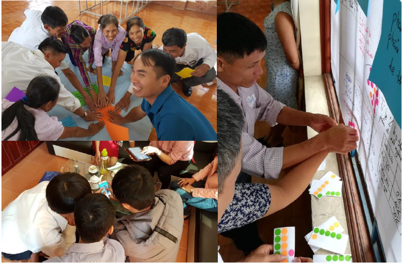

Environmental and animal drivers of antimicrobial resistance
Veterinary antimicrobial stewardship in Thai Nguyen, Vietnam

In response to the threat posed by antimicrobial resistance (AMR), global attention is increasingly focussed on antimicrobial stewardship (AMS). AMS involves the coordinated effort of all stakeholders to use antimicrobials appropriately, to reduce the development and spread of AMR. In some countries characterised by industrialised livestock systems, veterinary AMS has seen considerable success, largely attributed to greater regulation.
Countries dominated by smallholder systems are likely to be less responsive to such ‘top-down’ approaches. Vietnam has developed a National Action Plan on AMR and AMU reduction in livestock and aquaculture and is working to increase awareness of the problem. However, there remain significant challenges to achieving widespread AMS in farming communities. Effective AMS policy and action in Vietnam will need to be sensitive to the needs of farming communities.
SpatialEpiLab’s involvement
Our lab is involved in a project that aims to build an understanding of how antimicrobials were used in the livelihood strategies of smallholder farmers and their animal health networks. The project followed an iterative, mixed-methods design and combined epidemiological and Communication for Development approaches. The first study, in two provinces, revealed complex livelihoods interacting with decisions around antimicrobial use. Based on these findings, cross-sectional and longitudinal surveys were conducted. The final stage involved stakeholder workshops interpreting data and co-constructing an understanding of the system in which AMS decisions were made. Finally, stakeholders came together to identify leverage points for livelihood-sensitive intervention.
This research contributes to the global effort for greater antimicrobial stewardship (AMS). Beyond implications for the communities studied, the research yields a transferrable approach to contextualising antimicrobial practices in smallholder farming communities. Further, systems practice brings community stakeholders together in support of livelihood-sensitive policy and action for AMS. Concrete, community-developed recommendations for improving AMS are being considered and/or implemented.